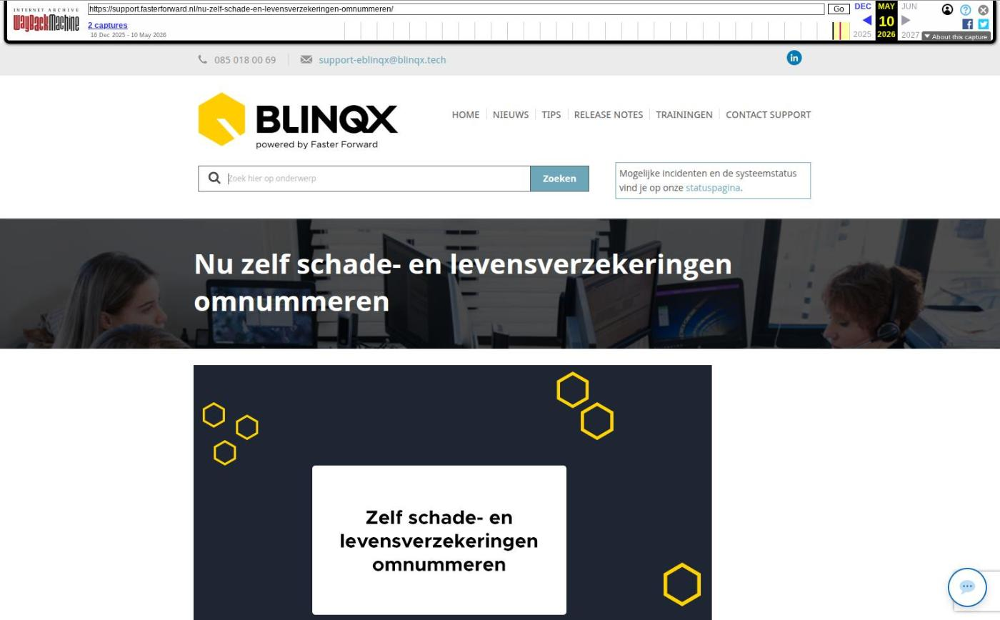

Nu zelf schade- en levensverzekeringen omnummeren

Tekstinhoud
Op dinsdag 21 oktober zijn Elements en eBlinqx weer verbeterd en uitgebreid met nieuwe features. Deze release bevat de geheel nieuwe module Omnummering.
Zelf schade- en levensverzekeringen omzetten bij wijzigingen portefeuille
Overige verbeterpunten
Zelf schade- en levensverzekeringen omzetten bij wijzigingen portefeuille
Vanaf nu kan je, als je werkt met mutatievoorstellen, gemakkelijk zelf schade- en levensverzekeringen omnummeren. Dit is handig wanneer een maatschappij de portefeuille heeft overgenomen van een andere maatschappij. Het omzetten doe je vanuit de geheel nieuwe module Omnummering. Hierin geef je aan welke polissen en naar wat deze omgezet moeten worden. Dit gebeurt door middel van een CSV bestand. Hier lees je er meer over.
Wil je gebruik maken van deze module? Stuur dan een e-mail naar support-eblinqx@blinqx.tech met daarbij de gebruikers die toegang mogen hebben.
Overige verbeterpunten
In Uwkluis wordt bij een hypotheekaanvraag de tijdlijn getoond. Voor deze tijdlijn wordt nu gekeken naar het veld 'Moet renteaanbod getekend retour?' om het juiste aantal stappen te tonen
Het betalingsoverzicht kan ook vanuit een workflow aangemaakt worden. In deze workflowactie kan je nu aangeven of je verzonden, niet verzonden of beiden wilt opnemen in het betalingsoverzicht
In het overzicht grootboekkaart – grootboekrekening is de kolom dossiernummer toegevoegd. Je kan vanuit hier doorklikken naar het dossier
Geplaatst op 20 oktober 2025
Laatste 5 releasenotes
Nog meer data en documenten vergelijken »
Gemakkelijk data en documenten vergelijken »
Verbeteringen boekhouding en facturatie »
Verbeteringen gespreksopname en onder de motorkap »
Verbeteringen onder de motorkap en gespreksopnames »